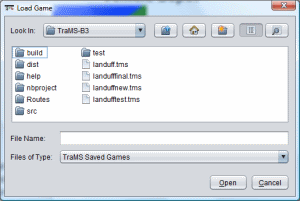
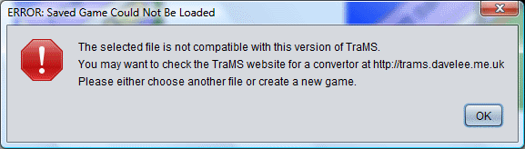

You can load a game in TraMS, by clicking on "Load Game" from the TraMS Welcome Screen or clicking File > Load Game from the menu bar. You will then be prompted to choose the location of the saved game as shown in the screen above. The file must have a .tms file extension. Click once on the name of the game and then click Open.
If you see the message below when you load a TraMS saved game, please check that the game was saved in TraMS. If it was, it may have been an earlier version of TraMS. Please check the TraMS website at http://trams.davelee.me.uk as a convertor may be available.
